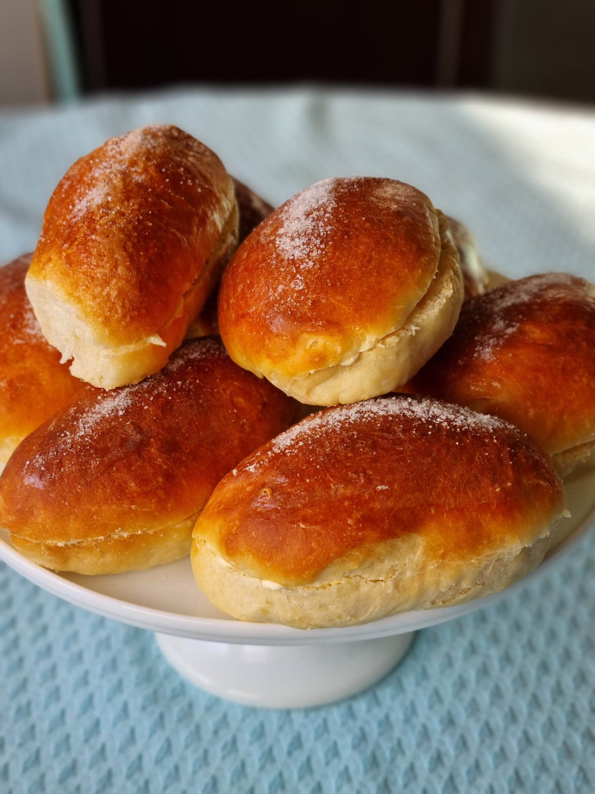
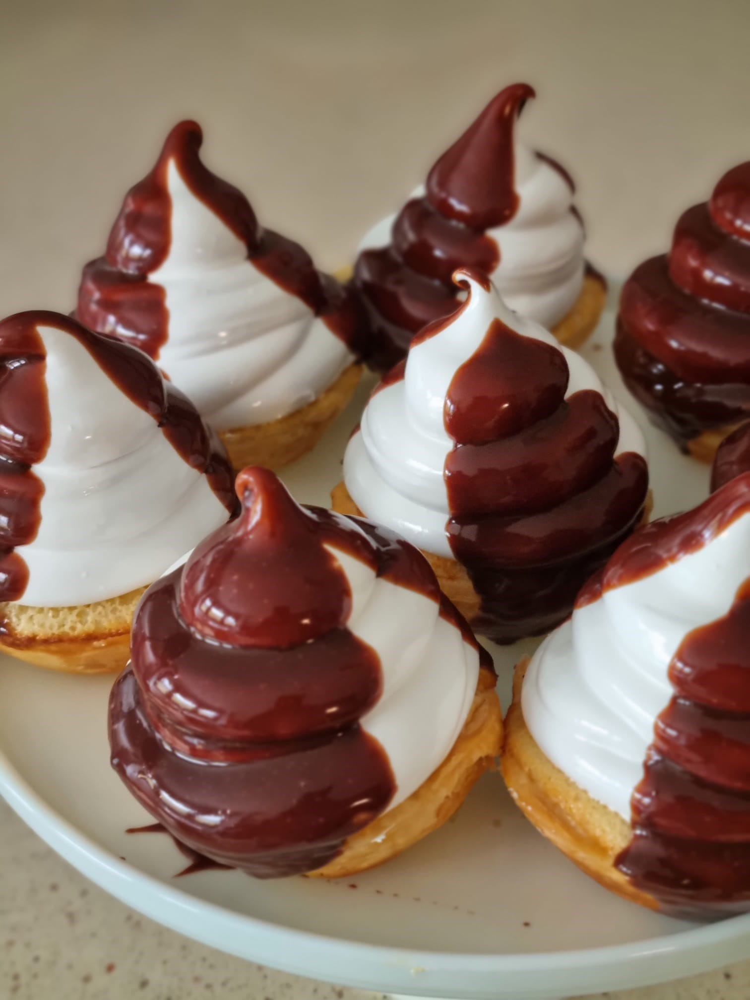

Bollo de mantequilla
El bollo de mantequilla es un dulce típico de Bilbao. Es una especie de bollo suizo o brioche cortado por la
mitad y relleno con una capa de crema de mantequilla, huevo y una capa de azúcar por encima. ¡Compruébalo!

Carolinas
Las Carolinas son unos dulces tradicionales de Bilbao y no hay pastelería que se precie en la ciudad que no
las tenga en su escaparate. Se trata de un pastel con una base de hojaldre rellena de crema pastelera, cubierto
de merengue italiano y decorado con crema de yema y chocolate. ¡Compruébalo!